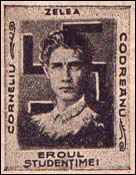
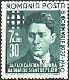
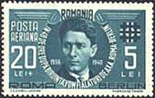
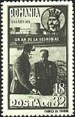
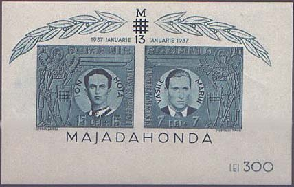
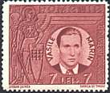
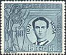
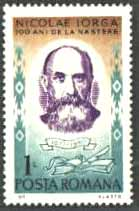

FROM DICTATORSHIP TO FASCISM
AND BACK (PART TWO)
Garda de Fier (Iron Guard), also called Totul Pentru Tara (All for the Fatherland) was a Romanian fascist and anti-Semitic movement, whose members were known as "Legionnaires." The organization was established in July 1927 by Corneliu Zelea Codreanu under the name of Legiunea Arhangehelului Mihail (Legion of the Archangel Michael), and was changed to the Iron Guard in 1929.

Popular among students,
members of the party took part in the pogrom in Oradea, on December 9, 1927.
In other cities as well, the Legionnaires, who were organized into
paramilitary units, committed acts of vandalism. See above a label of
unknown origin, with a swastika behind Codreanu, and provided with the
eloquent text: Eroul Studentimei = The Hero of the Students.
Under pressure from Romanian's
patron power, France, the Iron Guard was dissolved at the end of 1933. But
despite its official dissolution, it continued to functions. Close ties with
the Nazis came about in 1936. In 1937 it participated in the elections,
under the name Totul Pentru Tara, and received the third largest
segment of the vote. The growth of the Iron's Guard power was facilitated by
the leniency with which it was treated by the government until 1938, when
King Carol II banned all political activity. He also realized the threat the
guard posed to his regime, and ordered that its leaders be executed,
including their leader and founder Codreanu.
|
 |
 |
 |
In the summer of 1940, the king became reconciled to
Codreanu's successor, Horia Sima, and appointed him to the cabinet. On
September 6, 1940 Sima and Ion Antonescu formed a National Legionary
government, the legionaries representing a half of the government. In the
new proclaimed National-Legionary State, the Guard began a reign of terror against it political
adversaries and the Jews. To this end,
they enacted racist legislation, and ties with Nazi Germany and Fascist
Italy were strengthened. The legionaries created a parallel political
police, killed many former ministers and high officials (60 were killed in
the Jilava prison in November 1940), persecuted the Jews and, under the
pretext of romanianization, strip them of
their property and shared the pray among them.
From January 21 to 23, Sima staged a coup against
Antonescu, which failed because the army and Hitler remained loyal to
Antonescu. The abortive coup was accompanied by anti-Jewish riots in which
123 Jews were killed. After the rebellion
was quashed, further anti - Jewish legislation was introduced, whose final
goal was the total removal of Jews from Romanian life. The Iron Guard
leaders took refuge in Germany, where they became bargaining cards for the
Germans in their dealings with Antonescu.
Both stamps reproduced above show the legionnaires' leader Codreanu. The first one was issued on 8th of November 1940 and commemorates the 13th anniversary of founding of the Iron Guard by the same Codreanu. The second, issued on 1st of December 1940, commemorates also the joining of Romania of the Axis powers. The stamp on the right, issued on the 1st of November 1942, shows the Marshall Antonescu and the young King Michael I.

The stamps shown below, issued on January 13, 1941, and the sheet shown above, were dedicated to the Iron Guardists Marin and Mota, who perished in the Spanish Civil war, and who were celebrated as heroes of and by the Iron Guard movement.
 |
 |
There they were opposed, among others, to other Romanians (mainly communists), who fought in the so called International Brigades. The Spanish war the first confrontation of the big totalitarian European movements, the fascism (in power in Germany - of national-socialist origin, and in Italy - a form of guild socialism) and the communism (in power since 1917 in the Soviet Union, and supported by all communist parties worldwide).
 |
 |
Nicolae Iorga, 1871-1940, was a Romanian historian and statesman. A professor at the University of Bucharest, he founded (1910) and later led the National Democratic party; after World War I he was president of the Romanian national assembly. In 1931-32 he was premier of a coalition government under King Carol II. In November, 1940, Iorga was murdered by the Iron Guard legionnaires. His many fine historical works include detailed studies of Romanian religion, education, and literature, Geschichte des osmanischen Reiches (5 vol., 1908-13), and History of the Rumanians (10 vol., 1935-39, in Romanian). After 1965, Iorga's reputation as a great nationalist historian was acknowledged by the Romanian Communists, who had hitherto played down his work. The above stamps appeared in in 1971 and in 1990.
Sources: Microsoft Encarta, Encyclopedia.com, Simon Wiesenthal Multimedia Learning.
Link: Royal Dictatorship